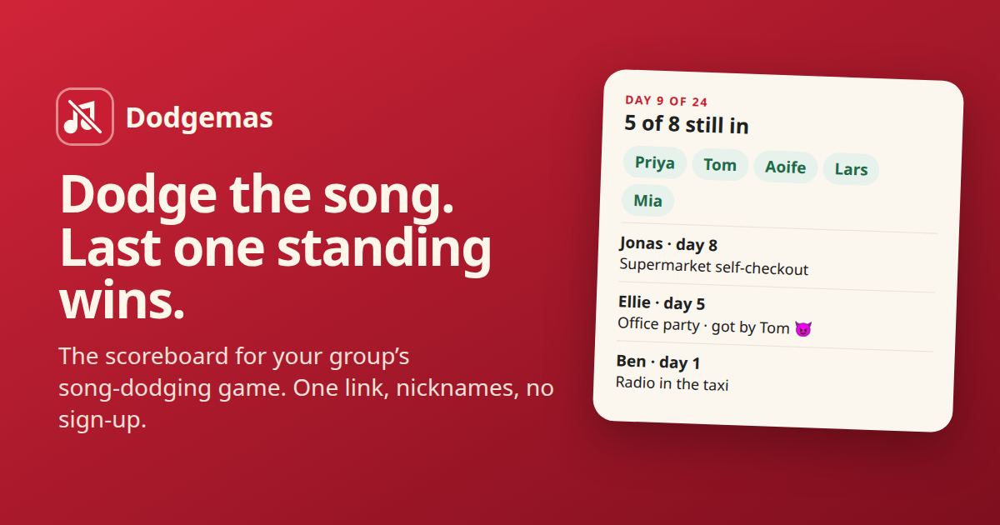

Dodge the song.
Last one standing wins.
Dodgemas is a free scoreboard for the December game of avoiding one famous Christmas song (or any song, word or spoiler your group picks). One person starts a game and shares the link; friends join with a nickname; everyone taps I’m out when it gets them, with where and who did it.
Start a game: free, no sign-up

Support
Lost your player on a new phone? On your old device, open the game and tap “Open on another device”, then open that private link on the new one.
Tapped “I’m out” by mistake? Tap “Undo” within 15 minutes.
Someone joined twice? The person who started the game can remove a player under “Your game”.
Anything else, or a deletion request: open an issue at github.com/janwan2003/song-dodge/issues.
Privacy
No accounts, no ads, no tracking. Games are deleted 60 days after their last day. Full privacy policy